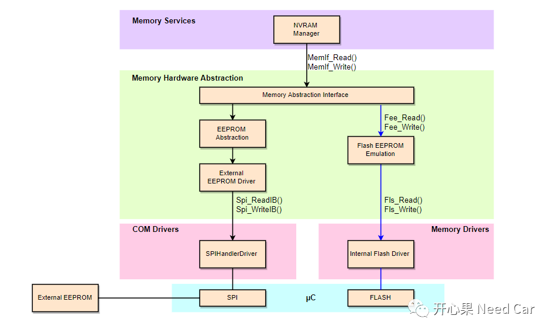
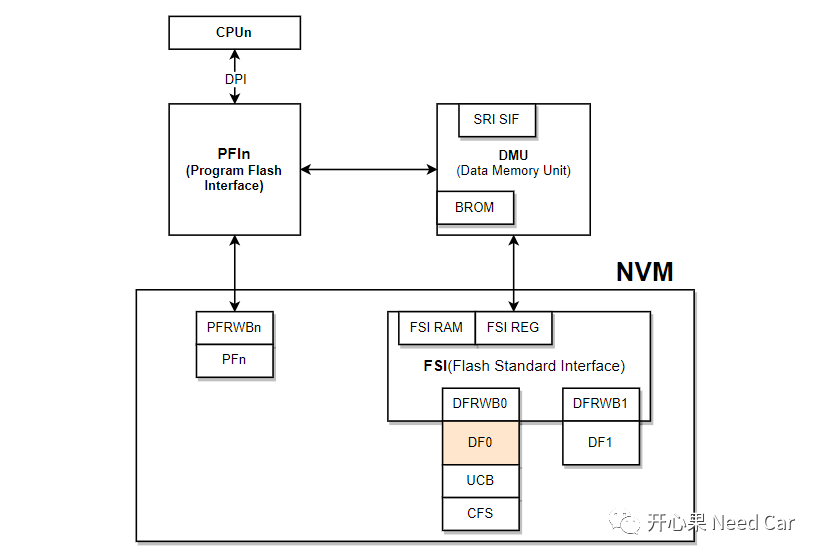
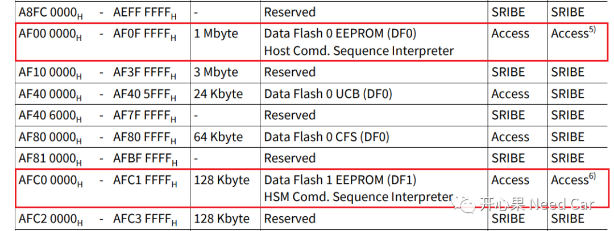
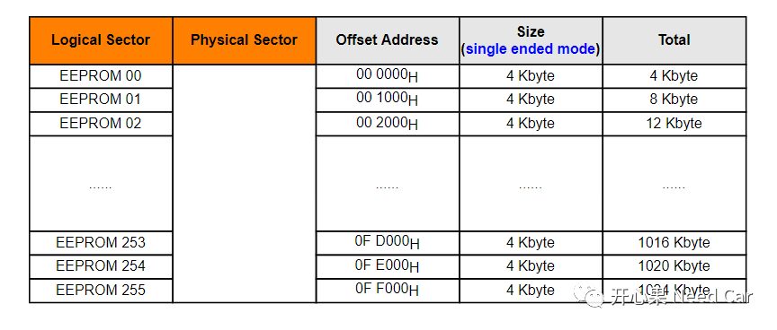
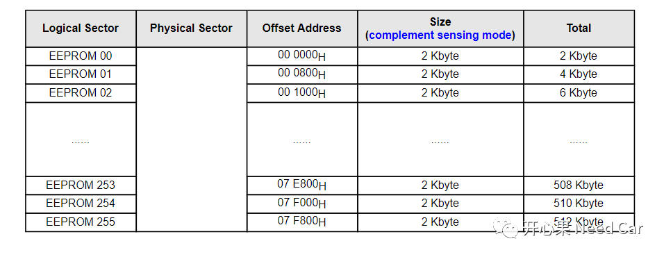
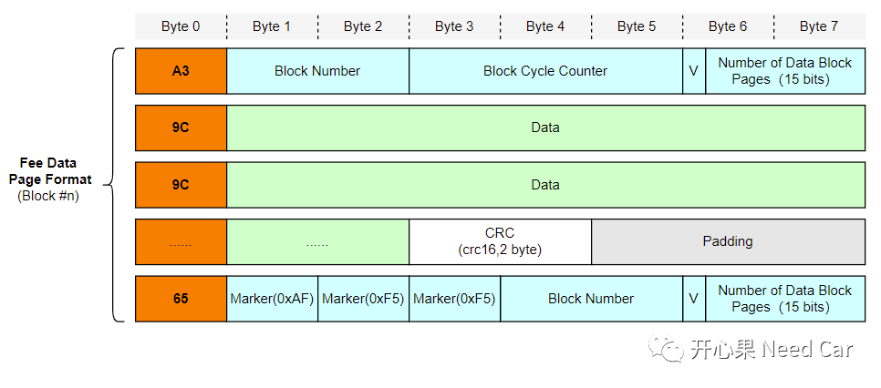
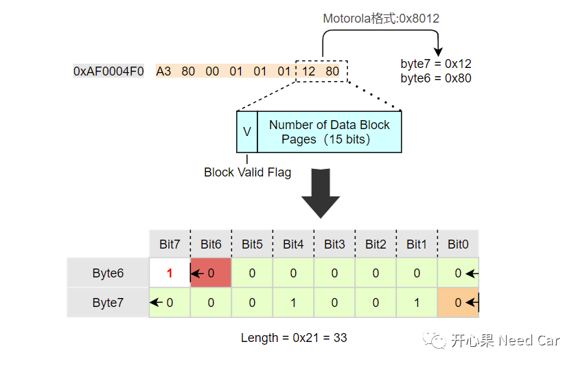
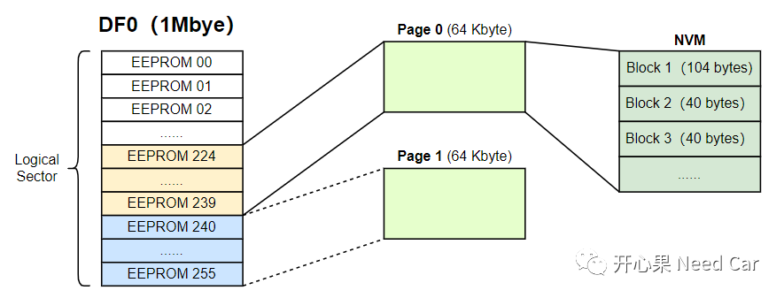
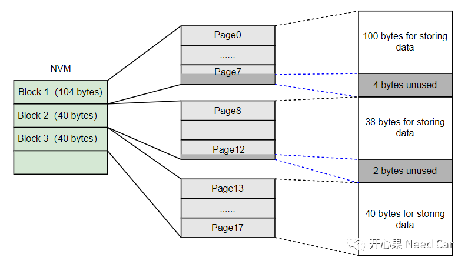
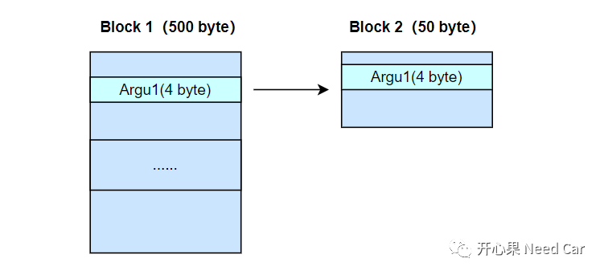

开心果 Need Car · 2022-07-09T12:32:00+08:00 · 微信原文
项目开发中，存储关键参数到非易失存储区，几乎必不可少。非易失存储区介质有EEPROM(electrically erasable programmable read only memory)、ROM(Read-Only Memory)等。ROM又可以分为PFLASH(Program Flash)和DFLASH(Data Flash)。
本文，基于英飞凌tc397，聊一聊NVM(non-volatile memory)。
相同点：
不同点
FLASH存储次数低，一般≥10万次的擦写寿命。而稍微好一点的EEPROM，擦/写寿命≥100万次（也有≥10万次的EEPROM）；
FLASH数据存储时间短，一般≥20年。EEPROM数据存储时间一般≥100年；
FLASH价格低，容量大。EEPROM价格高，容量小；
FLASH读/写速度快，EEPROM读/写速度慢。
EERPOM读写速度慢的主要原因是受限于IIC和SPI的通信速度，以AT25040（SPI Serial EEPROMs）为例，最高时钟频率2.1MHz。而FLASH在uC内部，CPU访问FLASH的速度更快（CPU的主频一般都是百万兆赫兹）。


由上可以看出，NVM不仅仅是指我们存储数据所用的DF0，NVM还包括：PFlash、UCB（User Configuration Blocks）、CFS（Configuration Sector）、DFlash1。
1、Data Flash EEPROM地址空间

2、扇区（Sector）

1、Logical Sector是FLASH擦除的最小单位（DFlash最小可擦除4 Kbyte或者2 Kbyte）。
2、DFLASH0_EEPROM分为两种模式：
single ended mode：每个Logical Sector空间大小为4 Kbyte，最多分配256个Logical Sector，可以使用空间256 * 4 = 1024 Kbye = 1 Mbyte。
complement sensing mode：每个Logical Sector空间大小为2 Kbyte，最多分配256个Logical Sector，可以使用空间256 * 2 = 512 Kbye，如下所示：

3、页（Page）
Page：可编程的最小单位，即：一次最少写一个Page。对于tc397 DFlash，Page = 8 bytes，所以，写一次NVM，最少要写8 bytes数据。假设：程序只更新了一个uint16类型参数Argu16(2 byte)，也必须写8 byte数据，实际需要更新此参数所在的Block，需要重新写一遍此Block。

A3：表示Block的起始行，占用一个byte
65：表示Block的结束行，占用一个byte
9C：表示数据存储行，占用一个byte
4、motorola格式

假设：需要分配3个Blcok，Block1存储100 bytes参数，Block2存储38 bytes参数，Block3存储40 bytes参数。
根据项目的实际情况，在DF0的末尾分配两个64 Kbyte空间模拟EEPROM，即Page0和Page1（注意与物理层page区分）。当前Page 0处于有效可写的模式，NVM的使用情况如下所示：

Block1存储100 bytes参数，实际需要分配104 bytes空间(4 bytes未使用)，因为一次写操作，最少写一个page（8 bytes）,如果需要写Block 1，则每次需要写13个Page;
Block2存储38 bytes参数，实际需要分配40 bytes空间(2 bytes未使用)，因为一次写操作，最少写一个page（8 bytes）。如果需要写Block 2，则每次需要写5个Page;
Block3存储40 bytes参数，实际需要分配40 bytes空间，空间充分利用。如果需要写Block 3，则每次需要写5个Page。
如下所示：

工程思考
当某个Block的参数修改以后，NVM需要存储最新的参数，而一次存储是将整个Block的参数一次性存储，如果Block空间分配过大，消耗的NVM空间就过大，这样会导致一个Page（假设Page 0）很快写完，进行换页操作，过快的换页操作也意味着DFlash擦除次数的提高，使得DFlash变得“不耐用”。而且切页操作耗时，可能会影响到某一时刻程序的运行状态。所以，当某些参数改写频繁时，可以将这些参数单独配置一个Block，不要与数据变动率低的参数放到一个Blcok中，这样可以延长NVM的使用寿命。
假设：Page大小为2048 byte，Block 1占用500 byte空间，Block 2占用50 byte空间。每次Argu1（4 byte）更新（存储NVM），需要将Argu1所在的Block整体重新写一遍，而写一遍Block 1需要使用500 byte空间。如果把Argu1放在Block 2中，只需要消耗50 byte空间。如果使用Block 1存储Argu1，Argu1更新到第5次时，就需要切页；如果使用Block 2存储Argu1，Argu1更新到第41次时，才需要切页，极大的降低了NVM的擦/写频率，延长其使用寿命。Block1、Block2示意如下：

致 谢
往期精彩回顾